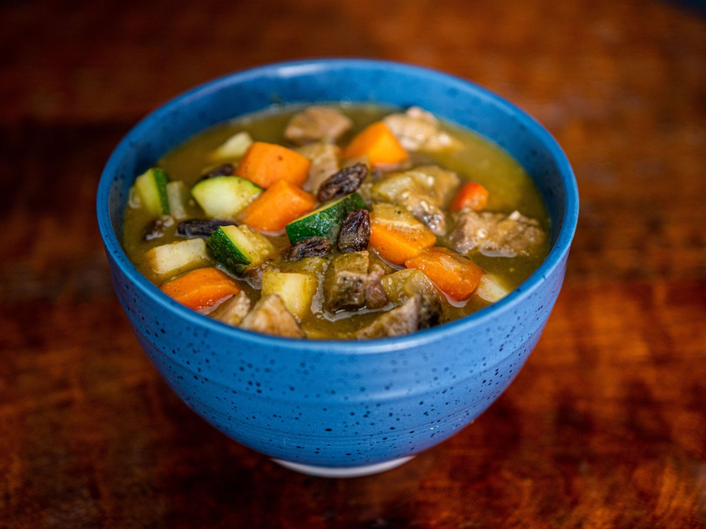
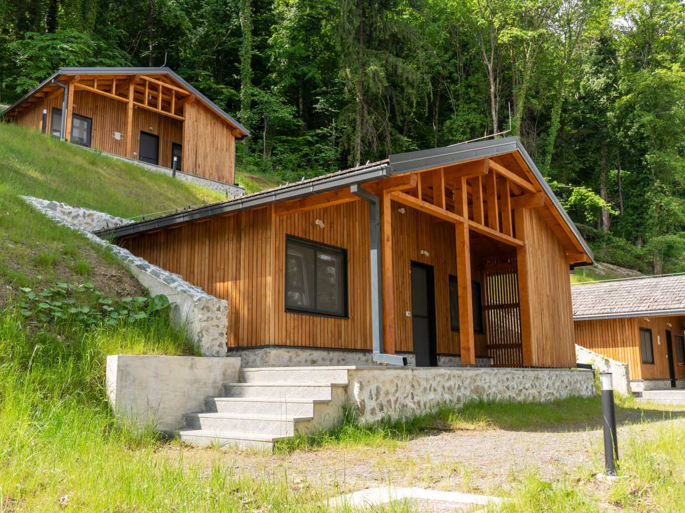
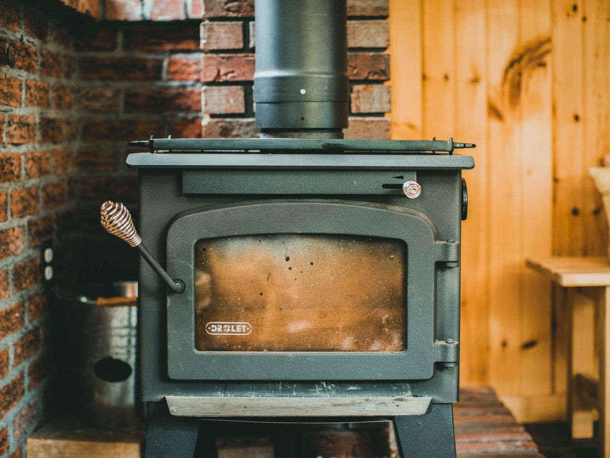
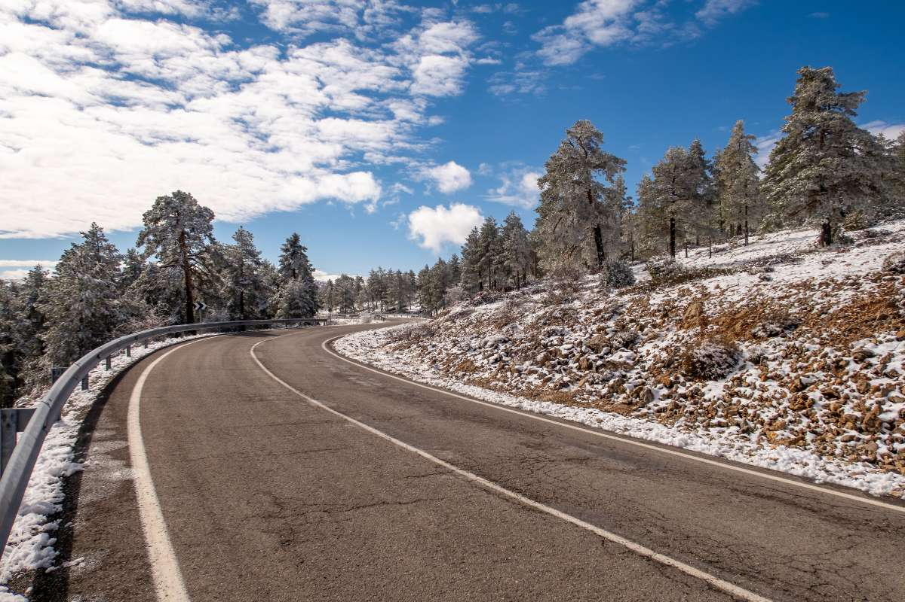
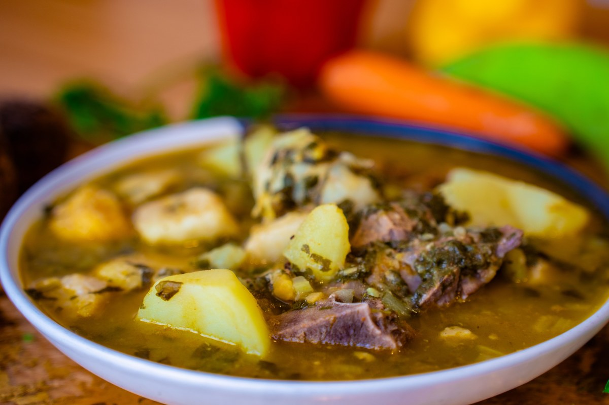
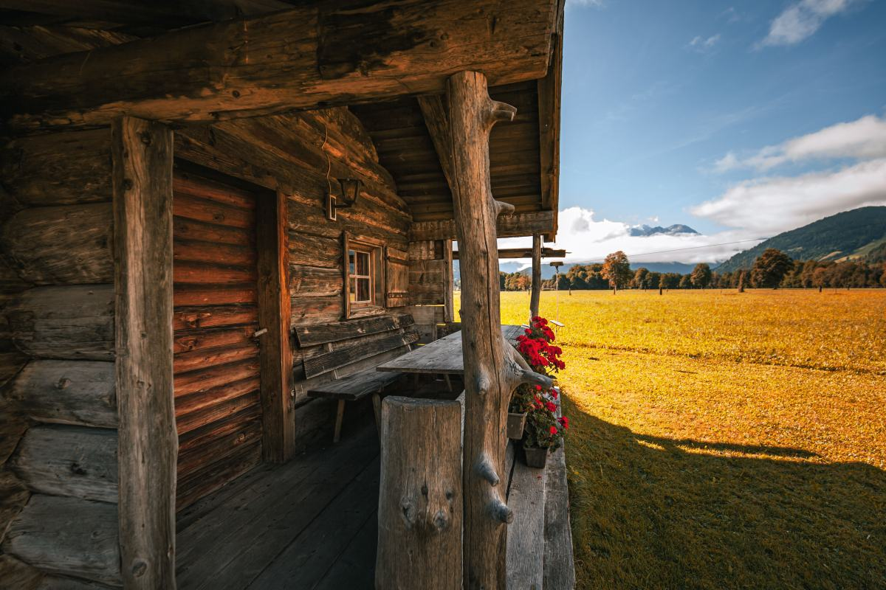
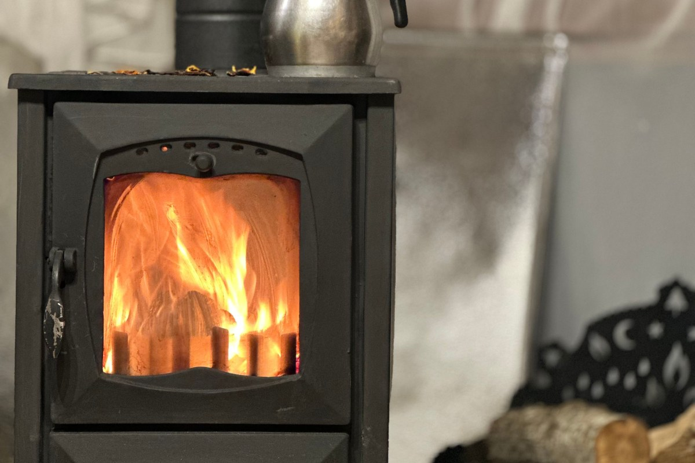
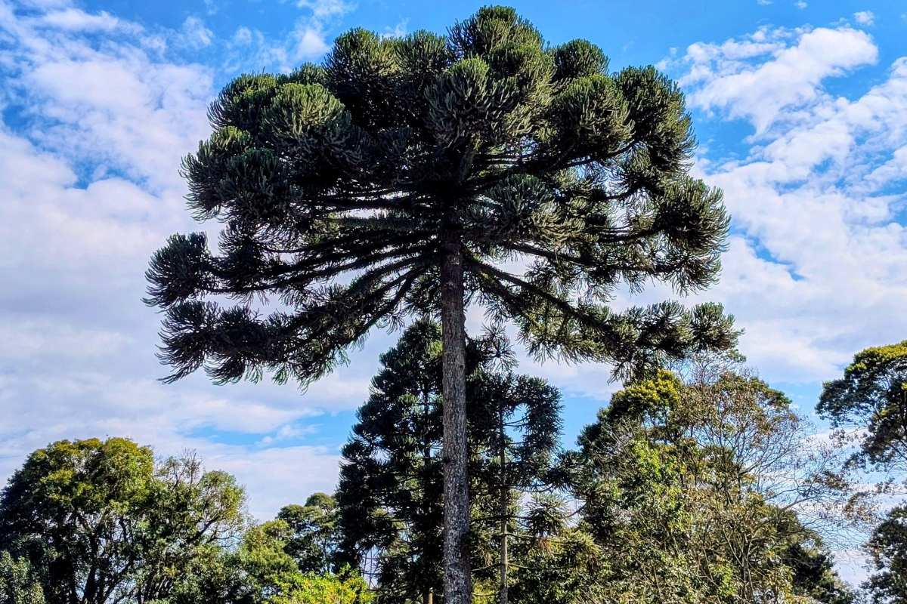

Ruta 181 · km 67,5
Puede parar a comer. O puede quedarse.
Restaurante y cabañas en el mismo kilómetro.
- 270reseñas en Google
- 4,8de nota
- 67,5kilómetro de la ruta 181
- 0horarios publicados
Dos cosas en el mismo lugar
Comer, quedarse, o las dos
La mitad de las llamadas empiezan con «¿se puede sólo…?». Sí, se puede.
-

Voy pasando
Sólo comer
No hay que alojar. Si son más de seis, avise una hora antes.
-

Me quedo
Sólo la cabaña
Traiga lo del desayuno y avise la hora de llegada.
-

Las dos
Comer y quedarse
Al reservar, diga si va a cenar: se compra para usted.
La anticipación real y lo que trae la cabaña los confirma José.
En el kilómetro 67,5 no se improvisa: se avisa.
Dicho antes, no después
Si viene en invierno
- 01
El camino
Puede haber hielo: mire el estado de la ruta.
- 02
La luz
Oscurece temprano: salga dos horas antes.
- 03
La cabaña
Con la hora avisada, la estufa se prende antes.
- 04
Señal y bencina
Se acaban antes: cargue en el último pueblo.
No reemplaza el estado oficial del camino.
Mande el «vamos llegando» mientras tenga señal.
El consejo más agradecido
Alrededor
Media montaña, a la orilla de la ruta





Fotos de referencia: el comedor y las cabañas los pone José.
Dónde estamos
Ruta 181, kilómetro 67,5
- Ubicación
- Camino Internacional, km 67,5, Curacautín
- Teléfono y WhatsApp
- 9 8284 3271
- Horario
- Falta el horario
- Cabañas
- Falta cuántas y qué incluyen
La dirección es un kilómetro: guarde el número antes de tomar la ruta.
Ruta 181, km 67,5 · Curacautín Abrir en Google Maps
Para el dueño
Qué es real y qué falta
Lo verificado
El nombre, el km 67,5 de la ruta 181, el teléfono y las 270 reseñas con 4,8.
Lo de ejemplo
Los tres casos y los consejos de invierno. No se afirman distancias ni tiempos.
Lo que falta
El horario, las cabañas y las fotos del lugar.